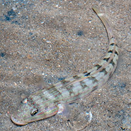
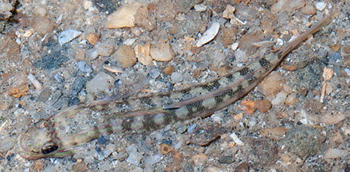
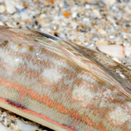
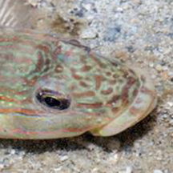

|
|
| fishes text index | photo index |
| Phylum Chordata > Subphylum Vertebrate > fishes > Family Gobiidae |
| Mural glider-goby Valenciennea muralis Family Gobiidae updated Sep 2020 Where seen? This beautiful goby is sometimes seen on our shores. Features: To 10-13cm long. It has a large underslung mouth. 2 narrow bright orange stripes along the body, many fine orange stripes on the head that extend less brightly along the body. Black spot near the back of the first dorsal fin. Usually found in small groups or pairs over the bottom near reefs. They dig out burrows with their mouth and shelter in them. |
 Tanah Merah, Jun 11 |
 Tanah Merah, Jun 11 |
| Mural glider-gobies on Singapore shores |
On wildsingapore
flickr
|
| Other sightings on Singapore shores |
 |
 |
Links
|